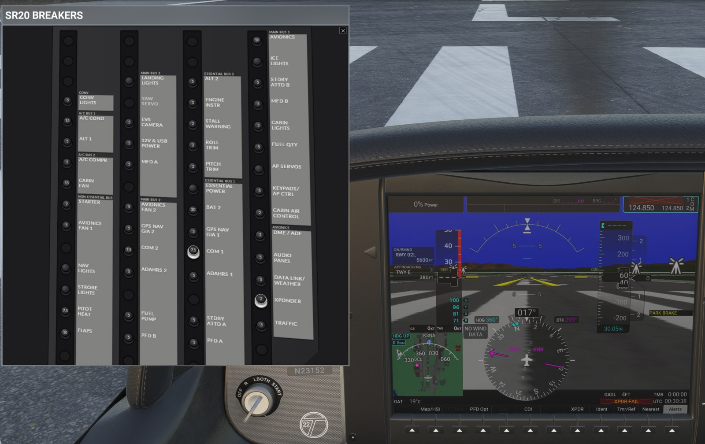

Installing and first flight
This section takes you from the download to a first flight in the SR20: what you need, how to install with the installer or by hand, what Windows will ask you, how to check that everything works, and how to upgrade or remove the mod.
Requirements
| You need | Notes |
|---|---|
| Microsoft Flight Simulator 2024 with the stock Cirrus SR22T | The SR20 is built on top of the sim's own SR22T and uses its 3D model, cockpit and G1000 NXi. Without the SR22T installed the SR20 cannot load. |
| Windows | Only for the SR20 Companion, the small background program that comes with the mod. The Companion is optional but recommended. |
| An internet connection (for the Companion) | The first time you fly somewhere new, the Companion downloads terrain for that area, and it fetches taxiway names for airport maps it makes on demand. |
| Navigraph charts (optional) | Their own install and subscription. The mod does not need them. |
Tested version. The mod was tested on the Steam version of MSFS 2024, sim version 1.9.24.0. The Microsoft Store version should work, and the installer looks for its folder, but it has not been tested.
No administrator rights. Everything installs for your Windows user only.
The two downloads
The download page offers two zip files. You need only one of them.
| File | What is in it | Use it when |
|---|---|---|
SR20RealismMod-1.0.0-installer.zip |
The installer SR20RealismMod-Setup-1.0.0.exe, the read-me README.txt and the licences |
Recommended. Setup finds the sim's folder, copies everything and makes the shortcuts. |
SR20RealismMod-1.0.0-manual.zip |
The same files as plain folders: Community2024\paulw-aircraft-sr20 (the aircraft), SR20Companion (the program), the read-me README.txt and the licences |
You want to install by hand, or Windows will not let the installer run. |
"Manual" here means installing by hand: you copy two folders yourself. It is not a user manual and it contains no extra documentation. Both zips have the same read-me and licences. The installer also copies them to the program folder and puts Read me in the Start menu.
Installing with the installer
Before you start
- Close Microsoft Flight Simulator 2024. Setup will not run while the sim is open.
- Unzip
SR20RealismMod-1.0.0-installer.zipanywhere. - Run SR20RealismMod-Setup-1.0.0.exe.
If the sim is still running, Setup shows this and waits:
Microsoft Flight Simulator 2024 is running. Close the sim first, then press Retry.
Close the sim and click Retry, or click Cancel to leave Setup.
The Windows SmartScreen warning
The installer is not code-signed, so Windows SmartScreen may stop it with a blue box that says "Windows protected your PC".
- Click More info.
- Click Run anyway.
If Smart App Control or a company policy blocks the installer outright, there is no Run anyway button. Use the manual-install zip instead (see Installing by hand), or install on a PC without that block.
Setup, page by page
Setup is a standard Windows installer with Back, Next and Cancel buttons. There is no welcome page. The page titles below are Setup's own English titles.
| Page | What it shows | What to do |
|---|---|---|
| 1. License Agreement | The licences: the aircraft package is CC BY-NC 4.0 (free, non-commercial), the Companion is AGPL-3.0. | Choose I accept the agreement, then Next. |
| 2. Information | "SR20 Realism Mod - before you install": a short list of what Setup does and what Windows may ask. | Read it, then Next. |
| 3. Select Components | What to install. See Page 3. | Leave the default unless you do not want the Companion. Next. |
| 4. Where is MSFS 2024? | The Community2024 folder Setup found. | Normally just Next. See Page 4. |
| 5. Select Additional Tasks | Three options for the Companion. This page is skipped if you chose not to install the Companion. | Leave the defaults. Next. |
| 6. Ready to Install | A summary of your choices. | Install. |
| 7. Completing the SR20 Realism Mod Setup Wizard | Setup is done. | Finish. |
There is no page asking where to put the program, and no Start-menu folder page. The Companion always goes into your user's Programs folder (see Where things are installed).
Page 3: components
The drop-down at the top has three choices:
| Choice | Installs |
|---|---|
| Aircraft and SR20 Companion (recommended) | Everything. This is the default. |
| Aircraft only | Only the aircraft. No Companion. |
| Custom | What you tick below. Setup switches to this choice by itself when you change a tick. |
The components:
| Component | Default | Notes |
|---|---|---|
| SR20 aircraft (required) | On, cannot be unticked | The aircraft package for the Community2024 folder. |
| SR20 Companion: terrain alerts (TAWS), glide ring, airport maps, iPad link | On | The background program. Without it the aircraft still flies. See The SR20 Companion and troubleshooting for what you lose. |
| RealSimGear Cirrus yoke force feel (only matters with that yoke) | On | A part of the Companion, listed under it. Without that yoke it does nothing, so it is safe to leave on. Untick it if you have the yoke and do not want the Companion to drive its forces. |
Page 4: Where is MSFS 2024?
The page reads:
Where is MSFS 2024? The SR20 goes into the sim's Community2024 folder.
Setup found this folder. Change it only if you keep your sim packages somewhere else. It must be Community2024, not Community (the sim treats Community as MSFS 2020 add-ons and ignores the SR20 there).
The box is labelled Community2024 folder:. Setup fills it in like this:
- If you installed the mod before, it proposes the folder you used last time.
- Otherwise it reads the sim's own settings file (
UserCfg.opt, the lineInstalledPackagesPath), first for the Steam version, then for the Microsoft Store version, and proposes theCommunity2024folder under that path. - If neither settings file is there, it proposes the default Steam folder if the sim's
Packagesfolder exists, then the default Store folder.
If you have both the Steam and the Store version, Setup proposes the Steam folder. Use Browse if you want the other one, or if you keep your packages somewhere else.
Setup checks the folder when you click Next. These are the messages you can get:
| Message | Meaning | What to do |
|---|---|---|
| "Setup could not find MSFS 2024. Browse to your Community2024 folder." | The box is empty. Setup did not find the sim. | Click Browse and choose your Community2024 folder. The two usual places are listed under Installing by hand. |
| "That is the Community folder, which the sim uses for MSFS 2020 add-ons. Choose Community2024 (next to it)." | You chose the old Community folder. The sim would ignore the SR20 there. | Choose the Community2024 folder beside it. |
| "Community2024\paulw-aircraft-sr20 is a link to another folder (a development copy). Remove the link first." | The aircraft folder in Community2024 is a link (junction or symbolic link) to another folder. Setup will not install through a link. | Normal users never see this. If you do, delete the link, then run Setup again. |
| "The folder above it (...) does not exist. Is the sim installed?" | The folder that should contain Community2024 (normally Packages) does not exist on this PC. |
Check the path. If the sim has never run on this Windows account, start it once, close it, and run Setup again. |
| "The folder is not named Community2024. Install there anyway?" | The folder has another name. | Click No and correct it, unless you really keep your MSFS 2024 community packages in a folder with another name. |
Page 5: options
| Option | Default | What it does |
|---|---|---|
| Start the SR20 Companion with Windows | On | Puts a shortcut named "SR20 Companion" in your Startup folder so the Companion starts quietly when you log on. Recommended, and needed for the RealSimGear yoke feel (the Companion must be running before the sim starts). You can change it later with Start with Windows in the Companion's tray menu. If you untick it, Setup removes a Startup shortcut left from an earlier install. |
| Start the SR20 Companion now | On | Starts the Companion as soon as the files are copied. |
| Open the iPad setup page when setup finishes | Off | Adds a ticked box Open the iPad setup page to the last Setup page. The page opens in your browser when you click Finish. You can open it any time later from the tray icon. |
While Setup installs
Setup checks once more that the sim is closed and stops a running Companion by itself. If something is in the way, Setup stops on a "Preparing to Install" page or shows a message box. Messages you can get at this point:
| Message | What to do |
|---|---|
| "Microsoft Flight Simulator 2024 is running. Close it and run setup again." | Close the sim and run Setup again. |
| "The SR20 Companion is still running. Right-click its icon by the clock, choose Quit SR20 Companion, then run setup again." | Do as it says. Setup could not stop the Companion itself. |
| "...\paulw-aircraft-sr20 is a link to another folder (a development copy). Remove the link first." | Normal users never see this. Delete the link, then run Setup again. |
| "Setup could not move the old ... aside (is a file in it open?). Nothing was changed." | An older copy of the aircraft is in use. Close any program or Explorer window that has a file from that folder open, then run Setup again. |
| "Setup could not save ...\settings.json. Nothing was changed." | Setup could not write the Companion's settings file in %LOCALAPPDATA%\SR20Companion. Check that the folder is not read-only, then run Setup again. |
| "Setup found an old backup at ... and could not restore it. Nothing was changed." or "Setup could not remove the old backup ... Nothing was changed." | An earlier Setup was interrupted and left a paulw-aircraft-sr20.sr20-backup folder. Close anything that uses it and run Setup again. |
| "The SR20 is installed, but setup could not delete the old copy at ... Delete that folder yourself (the sim ignores it meanwhile)." | The install worked. Delete the named paulw-aircraft-sr20.sr20-backup folder when you can. |
| "Setup did not finish and could not put the previous SR20 back. It is in ...: rename that folder to paulw-aircraft-sr20 (and manifest.json.sr20-backup inside it to manifest.json)." | Setup was cancelled or failed during an upgrade. Either rename as it says to keep the old version, or run Setup again. |
When you upgrade, Setup moves the old aircraft folder aside first. If Setup fails or you cancel, it puts the old one back.
The Windows firewall prompt
The first time the Companion starts (with Start the SR20 Companion now ticked, that is right at the end of Setup), Windows may ask:
Allow public and private networks to access this app?
- Click Show more.
- Leave only Private networks ticked. Untick Public networks.
- Click Allow.
Only the iPad / ForeFlight link uses the network, and only on your home network. If you click Cancel, everything except the iPad link still works, and you can fix it later from the iPad setup page (tray icon > iPad setup…), which checks the Windows firewall and offers a one-click repair.
Installing by hand
Use SR20RealismMod-1.0.0-manual.zip.
- Close the sim.
- Unzip the file anywhere.
- Copy the folder
paulw-aircraft-sr20from the zip'sCommunity2024folder into your sim's Community2024 folder:
| Sim version | Community2024 folder |
|---|---|
| Steam | %APPDATA%\Microsoft Flight Simulator 2024\Packages\Community2024 |
| Microsoft Store | %LOCALAPPDATA%\Packages\Microsoft.Limitless_8wekyb3d8bbwe\LocalCache\Packages\Community2024 |
You can paste these paths into the address bar of File Explorer. If you moved your packages to another drive, open UserCfg.opt (in the folder one level above Packages, at the same two places), find the line InstalledPackagesPath, and use the Community2024 folder under that path.
Do not use the folder named Community. The sim treats packages there as MSFS 2020 add-ons and ignores the SR20.
- Copy the
SR20Companionfolder anywhere you like, for exampleC:\Games\SR20Companion. - Run
SR20Companion.exefrom that folder before you start the sim. If SmartScreen warns about an unknown program, click More info, then Run anyway. Answer the firewall prompt as described above. - To start the Companion with Windows, right-click its icon by the clock and tick Start with Windows. You can also press Win+R, type
shell:startup, and put a shortcut toSR20Companion.exethere. - Start the sim and select the SR20.
The Companion finds the aircraft by itself in the same places Setup looks: the UserCfg.opt path, then the default Steam and Store folders.
No RealSimGear yoke force feel wanted? Create the file %LOCALAPPDATA%\SR20Companion\settings.json with this content, then quit and restart the Companion:
{"yoke_feel": false}
The installer does this for you when you untick the yoke component.
Finding the aircraft in the sim
- Start Microsoft Flight Simulator 2024. If it was running during the install, restart it: the sim reads the Community2024 folder only when it starts.
- Open the aircraft selection and look for Cirrus SR20 G6 (SR20 Realism Mod). Its manufacturer is Cirrus and its type SR20 G6. The information line reads "SR20 Realism Mod 1.0.0 by wazooda".
- The stock SR22T stays in the list unchanged. The mod adds the SR20 beside it and does not modify any of the sim's own files.
If you can't spot it, type SR20 into the search box of the aircraft selection.
If the SR20 is not in the list, see Troubleshooting.
First flight check list
Use this once after installing to confirm that every part is working. Items marked (needs the Companion) only work with the SR20 Companion running.
| # | Check | What you should see |
|---|---|---|
| 1 | The Companion's icon by the clock (it may be under the ^ arrow) | A cyan disc with a white aircraft and a green dot. The tooltip reads "SR20 Companion: everything is working", with "(sim not running)" added while the sim is closed. Amber means it is still starting. Red means something needs attention. |
| 2 | The aircraft | Cirrus SR20 G6 (SR20 Realism Mod) loads with the SR22T's cockpit. |
| 3 | The sim's toolbar | Two new panels: Instructor Station and SR20 Breakers (the circuit breaker panel). |
| 4 | The MFD engine page | An SR20 page: four cylinders for CHT and EGT, no TIT, no oxygen or anti-ice items. |
| 5 | TAWS self-test at avionics power-up (needs the Companion) | The TAWS TEST annunciation on the PFD, left of the selected-altitude box, for about 15 seconds. Then a chime, and the annunciation clears. It must not stay on TAWS FAIL or TAWS N/A. |
| 6 | SafeTaxi on the ground | On the MFD navigation map, zoomed in to 1.5 NM or less at the airport: taxiways with their names and hold-short lines. 50 airports are included. Any other airport is made on demand (needs the Companion); the MFD then shows "SurfaceWatch: loading ... airport map..." and "SurfaceWatch: ... airport map ready". |
| 7 | SurfaceWatch on the runway | The Information Box on the PFD with the runway you are on. |
| 8 | Glide range ring in flight (needs the Companion) | A cyan ring around the aircraft on the MFD navigation map, the MFD flight plan page map and the PFD inset map, once you are above 1,050 ft AGL. It is not shown on the ground, and it goes away again below 1,000 ft AGL. |
| 9 | iPad link (optional, needs the Companion) | Tray icon > iPad setup… opens the setup page "Send flight plans from your iPad" with two QR codes. |

Good to know on the first flight:
- The first time you fly in a new area, the Companion downloads the terrain for it. This needs an internet connection and takes a moment. Until the terrain is there, TAWS can show TAWS N/A and the glide ring is not drawn.
- The glide range ring is on by default, and the sim remembers your last choice. Its switch is in the MFD Map Settings, Map group, Glide Range Ring. The Fuel Range Ring in the same group is off by default.
- Do not reload the PFD or MFD in flight with the developer tools. It can break the CDI or drop autopilot modes. Restart the flight instead.
Upgrading
With the installer:
- Close the sim.
- Run the new installer over the old one. You do not need to uninstall first, and you do not need to quit the Companion: Setup stops it and, with Start the SR20 Companion now ticked, starts the new one.
- Setup proposes the Community2024 folder you used last time. If you choose another folder, the copy in the old folder is removed so the sim does not list the SR20 twice.
What is kept: the terrain cache, the iPad pairing, the logs and your Companion settings. What is not kept: airport maps the Companion made for airports outside the included 50. The new package starts clean, and those maps are made again the next time you fly there.
By hand:
- Close the sim.
- Quit the Companion: right-click its tray icon > Quit SR20 Companion.
- Replace both folders (
paulw-aircraft-sr20in Community2024, and yourSR20Companionfolder) with the new ones. Delete the old folders first, do not merge. - Start the Companion, then the sim.
A change to the aircraft never shows in a sim that is already running. Restart the sim after every install or upgrade.
Uninstalling
Installed with the installer:
- Close the sim.
- Open Windows Settings > Apps > Installed apps > SR20 Realism Mod > Uninstall. The Start menu also has SR20 Realism Mod > Uninstall SR20 Realism Mod.
- Confirm. The uninstaller stops the Companion by itself and then removes:
- the aircraft folder
paulw-aircraft-sr20from the Community2024 folder you installed into, including any airport maps the Companion added to it, and a leftoverpaulw-aircraft-sr20.sr20-backupfolder - the program folder%LOCALAPPDATA%\Programs\SR20 Companion- the Start-menu shortcuts and the Startup shortcut - At the end it asks:
Also delete the SR20 Companion's saved data (terrain cache, logs, iPad pairing, settings)?
followed by the two data folders, %LOCALAPPDATA%\SR20Companion and %LOCALAPPDATA%\SR20Glide. The default answer is No. Click Yes to remove everything, or No to keep the data for a later re-install. The question does not appear if neither folder exists.
Messages that stop the uninstaller:
| Message | What to do |
|---|---|
| "Microsoft Flight Simulator 2024 is running. Close the sim, then uninstall again." | Close the sim and uninstall again. |
| "The SR20 Companion is still running. Right-click its icon by the clock, choose Quit SR20 Companion, then uninstall again." | Quit the Companion from its tray icon and uninstall again. |
| "... is now a link to another folder (a development copy). Remove the link, then uninstall." | Normal users never see this. Delete the link, then uninstall. |
| "The SR20 aircraft was not removed: ... Afterwards delete ... yourself." | The sim or the Companion was started while the uninstaller was waiting for your confirmation. The rest was removed. Close the sim or the Companion, then delete the named aircraft folder by hand. |
The firewall entry Windows keeps. If you answered the firewall prompt, Windows made its own entry for the Companion. A per-user uninstall cannot remove it. It is harmless once the program is gone. To remove it: Windows Security > Firewall & network protection > Allow an app through firewall, click Change settings (this asks for administrator rights), select sr20companion, then Remove. If you used the iPad setup page's firewall repair, it also made two rules named "SR20 Companion - iPad flight plans (TCP 47823)" and "SR20 Companion - ForeFlight discovery (UDP 63093)". Remove those in Windows Defender Firewall with Advanced Security > Inbound Rules (administrator rights needed).
Installed by hand:
- Close the sim.
- Quit the Companion: tray icon > Quit SR20 Companion.
- Delete
paulw-aircraft-sr20from Community2024 and delete yourSR20Companionfolder. - Delete the Startup shortcut if you made one (Win+R,
shell:startup), or untick Start with Windows in the tray menu before you quit. - To remove the saved data too, delete
%LOCALAPPDATA%\SR20Companionand%LOCALAPPDATA%\SR20Glide. - Remove the firewall entry as described above if you want.
Where things are installed
Everything is per user. Nothing is written to Program Files, and the sim's own files are never changed.
| What | Where | Notes |
|---|---|---|
| The aircraft | <Community2024>\paulw-aircraft-sr20 |
Steam: %APPDATA%\Microsoft Flight Simulator 2024\Packages\Community2024. Microsoft Store: %LOCALAPPDATA%\Packages\Microsoft.Limitless_8wekyb3d8bbwe\LocalCache\Packages\Community2024. The Companion adds on-demand airport maps to this folder. |
| The Companion program | %LOCALAPPDATA%\Programs\SR20 Companion |
SR20Companion.exe, plus a docs folder with the read-me and licences. With a hand install: wherever you copied the SR20Companion folder. |
| Companion settings, logs, iPad pairing, taxiway-name cache | %LOCALAPPDATA%\SR20Companion |
settings.json, logs\, data\. Kept on upgrade. |
| Terrain cache | %LOCALAPPDATA%\SR20Glide\tiles |
Downloaded terrain tiles, at most 2 GB. Kept on upgrade. Safe to delete: tiles come back on demand. |
| Start menu | SR20 Realism Mod | SR20 Companion, SR20 iPad setup, Read me, Uninstall SR20 Realism Mod. With Aircraft only: Read me and Uninstall SR20 Realism Mod. |
| Startup shortcut | Your Startup folder (shell:startup), "SR20 Companion" |
Only with Start with Windows on. |
Quick reference
| Task | Where | What to do |
|---|---|---|
| Install | SR20RealismMod-Setup-1.0.0.exe |
Close the sim, run it, keep the defaults. |
| SmartScreen "Windows protected your PC" | Windows | More info, then Run anyway. |
| Installer blocked outright (Smart App Control) | Manual-install zip | Install by hand. |
| Choose the sim folder | Setup page "Where is MSFS 2024?" | Community2024, never Community. Browse to change it. |
| Firewall prompt "Allow public and private networks to access this app?" | Windows | Show more, leave only Private networks ticked, Allow. |
| Install by hand | Manual-install zip | Copy paulw-aircraft-sr20 into Community2024 (not Community), copy SR20Companion anywhere, run SR20Companion.exe. |
| Turn off the yoke feel (hand install) | %LOCALAPPDATA%\SR20Companion\settings.json |
{"yoke_feel": false}, then restart the Companion. |
| Find the aircraft | Sim aircraft selection | Cirrus SR20 G6 (SR20 Realism Mod). Restart the sim after installing. |
| Check the Companion | Icon by the clock | Green dot: working. Amber: starting. Red: needs attention. |
| Check the panels | Sim toolbar | Instructor Station and SR20 Breakers. |
| Upgrade | New installer | Close the sim and run it over the old install. |
| Uninstall | Windows Settings > Apps > Installed apps > SR20 Realism Mod | Uninstall. Answer the question about saved data. |
| Remove the firewall entry | Windows Security > Firewall & network protection > Allow an app through firewall | Change settings, select sr20companion, Remove. |
| Read-me and licences | Start menu > SR20 Realism Mod > Read me | Opens README.txt. |